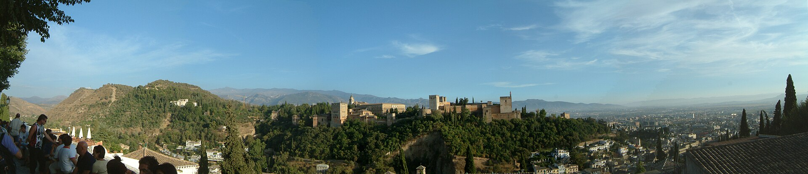
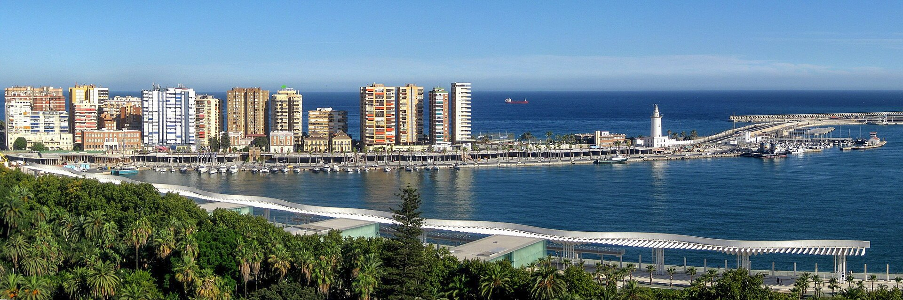
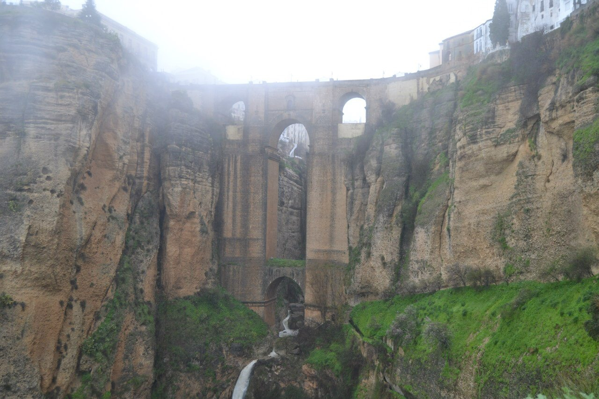
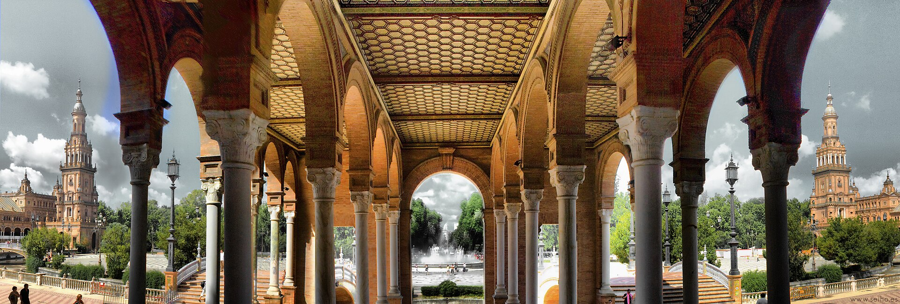

Dziewięć dni pod znakiem szynki krojonej cienko, ostrożnego parkowania w miastach na wzgórzach i pałaców, do których spóźnienie jest formą samosabotażu.
To nie jest lista zabytków do odhaczenia. To plan rytmu: rano kamień, w południe cień, wieczorem bar, a samochód — możliwie nieruchomy.

Alhambra z San Nicolás · fot. Henk Wierenga · CC BY-SA 2.5 · kadr i kompresja własne
Andaluzja lubi udawać pocztówkę. Wystarczy zejść ulicę niżej: kelner stawia na blacie tłustą tortillę, ktoś kłóci się o piłkę, skuter przeciska się tam, gdzie na mapie jest „strefa piesza”. I właśnie tam zaczyna się prawdziwa podróż.
Plan jest celowo powolny. Bagaż najpierw ląduje w hotelu, dopiero potem idziecie w miasto. Każda baza ma parking lub potwierdzony legalny podjazd. Najważniejszą rezerwację — wejście do Pałaców Nasrydów o 17:00 — traktujemy jak lot: dokument w kieszeni, margines czasu, zero improwizacji.
Mapa schematyczna, nie do nawigacji. Odcinki nie zachowują skali; sprawdź trasę i utrudnienia drogowe w dniu przejazdu.
Dzień 1 10 X
MálagaJedna noc · port, śniadanie i człowiek z tabliczką „arrivals”
Przyjazd po długiej drodze nie jest momentem na wielkie idee. Jest momentem na prysznic, kieliszek wytrawnego moscatela i talerz czegoś smażonego, co jeszcze rano pływało.
Sant Cugat → Málaga. Kierowca jedzie prosto na check-in. Rozładunek wszystkiego, potwierdzenie wyjazdu z garażu przed snem.
Odbiór z AGP. Godzinę i numer lotu wpisać po zakupie biletu. Spotkanie: hala przylotów, punkt awaryjny: parking P1.
Szybkie śniadanie. Churros i café solo w Casa Aranda albo tostada con tomate bliżej hotelu; potem wyjazd do Granady.
Antigua Casa de GuardiaWino prosto z beczki, rachunek kredą na blacie. Bez ceremonii.
Mercado de AtarazanasBoquerones, espetos jeśli pogoda trzyma, migdały i oliwki na drogę.

Port w Máladze · fot. Jean‑Marc Digne / Lojwe · CC BY-SA 3.0 · wersja pomniejszona
Dni 2–3 11–12 X
GranadaDwie noce · Realejo, Albaicín, geometria i granaty
Granada to miasto, które najpierw męczy łydki, a potem wynagradza je widokiem. Nie próbuj jej „zrobić”. Pozwól, żeby robiła z tobą, co chce.
Najpierw hotel. Málaga → Granada, check-in i walizki do pokoju. Po południu Realejo: Campo del Príncipe, Cuesta del Realejo, potem Albaicín i zachód słońca z mniej zatłoczonego Mirador de la Lona.
Fundación Rodríguez‑Acosta. Przyjdź 10–15 minut wcześniej. Wizyta jest prowadzona; obecnie wejścia ogólne odbywają się co godzinę 10:00–14:00.
Alhambra. Wejście od strony Pawilonu; Generalife → Partal → Alcazaba. Lekki lunch wcześniej, woda przy sobie.
Ustawienie pod Pałace Nasrydów. Wejście na bilecie: 17:00. Spóźnienie oznacza utratę prawa wejścia. Oryginalny dokument tożsamości, zgodny z biletem.
Bodegas CastañedaVermut, jamón, sery i tłok. Zamawiaj mało, potem jeszcze raz.
Bar Los DiamantesSmażona ryba, szybko i głośno. Nie przychodź po intymność.
Bar PoëWieczorny kontrapunkt: małe porcje, światowe smaki, granadyjska swoboda.
Dni 4–56 13–1516 X
RondaDwie noceTrzy noce · wąwóz, zimne piwo i droga w góry
Most jest spektakularny. Ale Ronda działa najlepiej pięć ulic dalej, kiedy nikt już nie fotografuje przepaści, a barman wie, kto przyszedł tylko raz, a kto wróci jutro.
Granada → Ronda. Check-in przed spacerem. Puente Nuevo, Jardines de Cuenca, stare miasto. Wieczorem barowa sekwencja po jednej porcji, nie uczta w pierwszym miejscu.
Río Majaceite. Jedź do El Bosque po śniadaniu. Odcinek do Benamahoma ma 5,3 km i łagodny profil; załóż ok. 2 godz. samego marszu plus postoje. Powrót: wcześniej zamówiona taksówka lub drugi samochód.
15 X · tylko wariant B
Dzień, który pachnie beczką
Powolny poranek w Rondzie, potem umówiona wizyta w bodedze w Serranía. Dobrym kierunkiem jest okolica Arriate; wybierz jednego producenta i zarezerwuj degustację z wyprzedzeniem. Kierowca nie degustuje — to nie jest miejsce na kreatywną interpretację przepisów.
El LechuguitaKlasyczny bar, niskie ceny, małe porcje. Zacznij od sałaty z octem i czosnkiem.
Casa MateosNowoczesna kuchnia bez zerwania z Rondą; warto rezerwować.
Tragatá · splurgeJedyny zaplanowany droższy wieczór. Rezerwacja; jeśli wybierzecie splurge w Sewilli, tu zostańcie przy barach.

Puente Nuevo · fot. Jalovisko · CC BY-SA 4.0 · wersja pomniejszona
Dni 6–8 15–17 XDni 7–8 16–17 X
SevillaTrzy noceDwie noce · cień, azulejos i ostatnia ronda
Sewilla jest piękna w sposób niemal podejrzany. Antidotum: poranek na targu, obiad przy stalowym blacie i siesta, zanim miasto spróbuje ugotować człowieka na chodniku.
Ronda → Sevilla. Check-in i pozostawienie auta do dnia wylotu. Wieczór: Arenal → Casa Morales → spacer nad Gwadalkiwirem.
Alcázar i Santa Cruz rano. Bilet na pierwszą możliwą porę. Po południu Triana: Mercado, ceramika, Las Golondrinas.
Plaza de España o świcie. Potem Parque María Luisa, lunch, drzemka i ostatni wieczór w Centro.
Ronda → Sevilla. Check-in, auto do garażu. Po południu Triana i zachód nad Gwadalkiwirem; wieczorem Casa Morales.
Alcázar na pierwszą porę. Santa Cruz, lunch, odpoczynek. Późnym popołudniem Plaza de España i Parque María Luisa. To dzień gęstszy, ale bez sprintu.
Casa MoralesWielkie tinajas, montaditos i stare Centro, zanim zrobi się teatralnie.
Las GolondrinasTriana: puntas de solomillo i grillowane pieczarki.
El RinconcilloInstytucja od 1670; idź dla atmosfery i espinacas con garbanzos.
Eslava · alternatywny splurgeJeśli nie Tragatá. Zarezerwuj i nie zamawiaj wszystkiego naraz.

Plaza de España · fot. S. Hoya · CC BY-SA 2.0 · wersja pomniejszona
Dzień 9 18 X
PowrótSevilla → lotnisko → Sant Cugat
Ostatni dzień jest logistyką, nie zwiedzaniem z walizką. Śniadanie blisko hotelu, odbiór auta, kontrola pokoju, paliwo i lotnisko z zapasem narzuconym przez wypożyczalnię oraz przewoźnika.
Godzina wyjazdu z hotelu: ______ · lot SVQ: ______ · zwrot auta: ______
Dolicz tankowanie, zdjęcia auta, dojście z punktu zwrotu i kontrolę bezpieczeństwa. Potwierdzenie oddania zachowaj do zamknięcia depozytu.
Decyzja
Trzecia noc: Ronda czy Sevilla?Ten sam dodatkowy dzień, dwie zupełnie różne podróże
To nie jest wybór między „małym” i „dużym” miastem. To wybór między krajobrazem, winem i oddechem a miejską różnorodnością, sztuką i barami. W obu wariantach dodatkowa noc daje w praktyce jeden pełny dzień.
Wariant B · Ronda 13–16 X
Trzy noce w Rondzie
Popołudnie na miasto, osobny dzień na Río Majaceite i jeszcze jeden pełny dzień na Serranía, wino albo spokojniejszą Rondę.
Za
Ronda przestaje być przystankiem „most i dalej”.
Jest miejsce na bodedę bez wciskania jej po szlaku.
Powstaje pogodowy bufor dla Majaceite.
Można dołożyć Setenil, Acinipo albo Grazalemę.
Więcej małych barów, krajobrazu i zwykłego nicnierobienia.
Wieczory są spokojniejsze po odjeździe jednodniowych grup.
Dobre lekarstwo na zmęczenie po intensywnej Granadzie.
Przeciw
Bez wycieczki lub bodegi sama Ronda może wydać się mała.
Plan jest zależny od deszczu, wiatru i stanu szlaków.
Więcej krętych dróg i więcej czasu za kierownicą.
Degustacja wymaga kierowcy, który nie pije, albo transportu.
Sewilla zostaje zaledwie z jednym pełnym dniem.
Mniej planów pod dachem na brzydką pogodę.
Trzeba świadomie zaplanować 15 X, inaczej dzień się rozpłynie.
Wariant A · Sevilla 15–18 X
Trzy noce w Sewilli
Wieczór na wejście w miasto i dwa pełne dni, które można podzielić między zabytki, dzielnice, sztukę i jedzenie.
Za
Dwa pełne dni pasują do rzeczywistej skali Sewilli.
Alcázar nie musi konkurować z Trianą i Plaza de España.
Więcej wieczorów na różne bary zamiast jednego maratonu.
Mnóstwo dobrych opcji na deszcz albo gorące południe.
Po zaparkowaniu auto może stać do wylotu.
Łatwiej dopasować godziny Alcázaru i katedry.
Można wyjść poza pocztówkę: Macarena, Feria, Bellas Artes.
Przeciw
Więcej tłumu, kolejek, rezerwacji i turystycznego hałasu.
Ryzyko zmęczenia kolejnymi pałacami po Granadzie.
Nocleg z parkingiem prawdopodobnie będzie droższy.
W centrum łatwo trafić do przeciętnego baru dla turystów.
Mniej czasu dla krajobrazu i prowincjonalnej Andaluzji.
Trzeci dzień może stać się kolejną listą zabytków do zaliczenia.
W słoneczny dzień bodega może kusić bardziej niż muzeum.
Pytanie
Przewaga Rondy
Przewaga Sewilli
Ile pełnych dni?
15 X jest wolny na Ronda/Serranía.
16 i 17 X są pełnymi dniami miejskimi.
Największy zysk
Wino, góry, małe miejscowości i oddech.
Alcázar, katedra, Triana i Plaza de España bez ścisku.
Największa strata
Sewilla staje się intensywnym city breakiem z jednym pełnym dniem.
Ronda dostaje tylko popołudnie miejskie i dzień Majaceite.
Pogoda
Duża zależność od deszczu, wiatru i stanu szlaków.
Dużo muzeów, kościołów, pałaców i targów pod dachem.
Samochód
Przydatny, ale oznacza dalsze prowadzenie i kręte drogi.
Po przyjeździe najlepiej zamknąć go w garażu.
Jedzenie
Ventas, payoyo, mięso, lokalne wino, niewielkie bary.
Największy wybór tapas, targów i ambitniejszych restauracji.
Tempo
Wolniejsze, bardziej krajobrazowe.
Intensywniejsze, ale łatwe do podzielenia na dwa dni.
Dla kogo?
Dla osób, które wolą miejsca od zabytków i drogę od kolejki.
Dla osób jadących pierwszy raz i chcących poznać pełniejszą Sewillę.
Co dokładnie daje dodatkowy dzień w Rondzie
15 października: wybierz jeden główny motyw
Pełna pętla po RondziePuente Nuevo z kilku stron, Jardines de Cuenca, Puente Viejo, Arco de Felipe V i zejście Camino del Albacar.
Baños ÁrabesJedne z najlepiej zachowanych łaźni tego typu w Hiszpanii; logiczne połączenie ze starymi mostami.
Casa del Rey Moro i La MinaOgrody i schody prowadzące w dół wąwozu. Sprawdź dostępność poszczególnych części.
Palacio de MondragónMuzeum miejskie w dawnej rezydencji z dziedzińcami; dobry kontekst dla historii Rondy.
Alameda del TajoSpacer po cienistym parku i balkonach nad równiną, najlepiej rano lub przed zachodem.
Plaza de TorosHistoria corridy i architektura areny. Warto tylko, jeśli temat faktycznie was interesuje.
Bodega w Serranía de RondaUmówiona degustacja w okolicy Ronda–Arriate; osobny transport lub całkowicie trzeźwy kierowca.
AcinipoRzymski teatr na płaskowyżu około 20 km od miasta; przed wyjazdem potwierdzić otwarcie i dojazd.
Setenil de las BodegasDomy wsunięte pod skałę; najlepiej rano, z parkingiem na obrzeżu i przed przyjazdem autokarów.
GrazalemaBiałe miasteczko, górskie widoki, queso payoyo i lunch w venta; również jako plan awaryjny.
Zahara de la SierraWidok na zbiornik i białe miasto pod zamkiem; piękne, ale wymaga kolejnej krętej drogi.
Dzień bez programuPóźne śniadanie, czytanie, dwa bary, zachód nad wąwozem. To pełnoprawna atrakcja.
Co dokładnie daje dodatkowy dzień w Sewilli
16–17 października: rozdziel monumentalne od codziennego
Real AlcázarPałace, dziedzińce i ogrody wymagające spokojnego bloku oraz rezerwacji na konkretną godzinę.
Katedra i GiraldaOsobny blok zamiast dodatku do Alcázaru; wejście na wieżę oznacza długie rampy i dużo ludzi.
Archivo de IndiasChłodniejszy i cichszy kontrapunkt dla dwóch wielkich zabytków obok.
Barrio Santa CruzWczesny spacer po dawnym kwartale żydowskim, zanim uliczki wypełnią grupy.
Plaza de EspañaNajlepiej wcześnie rano lub późnym popołudniem, połączona z Parque María Luisa.
TrianaMercado de Triana, Centro Cerámica, Calle Castilla, San Jacinto i bary z dala od najbardziej oczywistego odcinka Calle Betis.
Museo de Bellas ArtesMurillo, Zurbarán i dawny klasztor; dobry plan na upał albo deszcz.
Casa de PilatosPałac łączący gotyk, mudéjar i renesans, zwykle spokojniejszy od Alcázaru.
Palacio de las DueñasDziedzińce, ogrody i arystokratyczna Sewilla bez rozmiaru królewskiego kompleksu.
Macarena i Calle FeriaBazylika, mury, targ i bardziej codzienna część miasta.
Metropol ParasolPanorama współczesnej Sewilli; warto dla widoku, niekoniecznie dla samej konstrukcji.
Torre del Oro i nabrzeżeŁatwy spacer między Arenal a Trianą, dobry na pierwszy wieczór.
CAAC i Monasterio de la CartujaSztuka współczesna, klasztor, ceramika i Expo ’92; osobny półdniowy kierunek.
ItálicaRzymski amfiteatr i mozaiki w Santiponce; opcja półdniowa, jeśli miasta zrobi się za dużo.
CarmonaBramy, nekropolia i białe miasto na wzgórzu; wybieraj zamiast Itálici, nie obok niej.
Trzy różne wieczory tapasArenal i Centro, Triana oraz okolice Alameda/Feria — bez próby zjedzenia całej Sewilli naraz.
Skrót decyzyjny. Wybierzcie Rondę, jeśli co najmniej dwa z tych zdań brzmią jak wy: wino jest ważniejsze od katedry; lubicie małe miasta; chcecie Setenil albo Acinipo; potrzebujecie pustego dnia; Sewillę już znacie. Wybierzcie Sewillę, jeśli jedziecie tam pierwszy raz, chcecie zobaczyć Alcázar bez sprintu albo źle znosicie plany zależne od pogody.
Bank opcji
Więcej niż zdołacie zjeśćWybierajcie po jednym dodatku, nie wszystkie — urlop nie jest egzaminem
Poniżej jest nadmiar. Celowy. Każde miasto dostaje trzy osobowości: można iść za jedzeniem, za kamieniem albo za zwyczajnym życiem. Najlepszy plan powstanie po skreśleniu połowy.
Málaga · wieczór 10 X / poranek 11 X
Opcja M1 · apetyt
Stare bary i słodkie wino
Od Antigua Casa de Guardia przejdź do Atarazanas, potem szukaj małych porcji w Soho. Zamów pajarete albo seco, nie najdroższe wino z półki.
60–90 minut
mało chodzenia
dobry wybór po długiej trasie
Najrozsądniejsza
Opcja M2 · morze
Pedregalejo i espeto
Jeśli przylot nie jest bardzo późny i ktoś ma siłę: taksówka nad wodę, sardynki z łódki-grilla, ensalada malagueña z ziemniakiem, pomarańczą i dorszem.
potrzebny dodatkowy przejazd
najlepsze przy dobrej pogodzie
nie wciskaj przed odbiorem z lotniska
Opcja M3 · poranek
Atarazanas bez safari
Wejdź jako klient: kup oliwki, migdały albo owoce, nie blokuj przejścia. Od 2026 targ wyraźnie prosi, by nie dotykać produktów i nie fotografować bez zgody.
30–45 minut
potem śniadanie
wyjazd przed południem
Granada · 11–12 X
Opcja G1 · pierwszy wieczór
Realejo po ludzku
Campo del Príncipe → plac Santo Domingo → Casa de los Tiros z zewnątrz → Cuesta del Realejo. Siądź tam, gdzie siedzą ludzie bez plecaków.
2–3 km
łagodne tempo
najmniej logistyczna
Po podróży
Opcja G2 · złota godzina
Darro, Albaicín, zejście nocą
Plaza Nueva → Carrera del Darro → Paseo de los Tristes → Cuesta del Chapiz → Mirador de la Lona. Wróć autobusem miejskim albo schodź oświetloną trasą.
strome podejścia
3–4 godziny z barem
San Nicolás można ominąć, gdy tonie w tłumie
Opcja G3 · Sacromonte
Jaskinie bez folkloru z plastiku
Wybierz Museo Cuevas del Sacromonte albo Abadía i wcześniej sprawdź godziny. Jeśli flamenco, rezerwuj kameralny występ i wiedz, za co płacisz; nie każdy neon „zambra” oznacza objawienie.
pół dnia
autobus oszczędza kolana
nie dokładać w dzień Alhambry
Opcja G4 · architektura
Carmeny i cisza
Po Rodríguez‑Acosta zejdź przez Carmen de los Mártires. To dobry pomost między białą, osobliwą fundacją a Alhambrą — ogród zamiast kolejnej kolejki.
blisko głównej trasy
45–75 minut
sprawdź dostęp w dniu wizyty
Łatwo dołożyć
Opcja G5 · historia
El Bañuelo i Maristán
Mała dawka miasta Zirydów przy Carrera del Darro. Dobry plan na deszcz lub chwilę między barami; wymaga mniej czasu niż wielkie muzeum.
około godziny
część pakietu monumentos andalusíes
sprawdź dzień wejścia
Opcja G6 · nicnierobienie
Herbata i obserwacja
Calderería Vieja pachnie miętą i bywa teatralna, ale filiżanka herbaty nadal potrafi uratować nogi. Potem zejdź boczną ulicą i nie kupuj lampy tylko dlatego, że świeci.
bez rezerwacji
dowolny czas
najlepsze między 17:00 a kolacją
Ronda i Serranía · 13–1516 X
Opcja R1 · klasyk
Trzy twarze Puente Nuevo
Najpierw most, potem widok z Jardines de Cuenca, na końcu zejście w stronę Camino del Albacar. Ten sam kamień z góry, z boku i od dołu przestaje być pocztówką.
2–3 godziny
strome zejście
wracaj przed zmrokiem
Pierwszy dzień
Opcja R2 · pod ziemią
Baños Árabes i stare mosty
Zejdź do najlepiej zachowanych łaźni w mieście, potem Puente Viejo i Arco de Felipe V. Logiczna pętla, która opowiada o Rondzie sprzed wielkiego mostu.
około 2 godzin
konkretne godziny wejść
dobra opcja przy wietrze
Opcja R3 · Rzym
Acinipo, miasto na pustkowiu
Ruiny rzymskiego teatru na płaskowyżu około 20 km od Rondy. Jedź wyłącznie po sprawdzeniu otwarcia i drogi; to nie jest spontaniczny punkt „po drodze”.
2,5–3,5 godziny z przejazdem
auto konieczne
słońce i wiatr bez litości
Opcja R4 · białe miasteczko
Grazalema zamiast szlaku
Gdy Majaceite odpada, przejedź do Grazalemy: krótki spacer, queso payoyo, zupa albo gulasz w venta. Góry oglądane z krzesła też są górami.
plan pogodowy
kręta droga
nie śpiesz się po deszczu
Awaryjna
Opcja R5 · tylko B
Wino z wysokości
Zarezerwuj wizytę w jednej bodedze między Rondą a Arriate. Pytaj o tintilla de Rota, petit verdot i warunki uprawy, zamiast polować na „najlepszą” butelkę.
90–150 minut
rezerwacja obowiązkowa
trzeźwy kierowca bez wyjątków
Dzień 15 X
Opcja R6 · tylko B
Setenil, ale wcześnie
Domy pod skałą są warte widoku, główna ulica w środku dnia — mniej. Jedź rano, przejdź Calle Cuevas del Sol i del Sombra, wypij kawę i wyjedź przed autokarami.
pół dnia
parking na obrzeżu
nie łącz z długą degustacją
Sevilla · 15–1716–17 X
Opcja S1 · imperium
Katedra, Giralda, Archivo
Zestaw wielkich symboli, ale nie wciskaj go między Alcázar a Triana. Katedra i Giralda potrzebują osobnego bloku; Archivo de Indias jest cichszym oddechem.
3–4 godziny
bilet z wyprzedzeniem
dużo stania
Opcja S2 · Triana
Gliniane ręce miasta
Mercado de Triana → Centro Cerámica → uliczki za San Jacinto → Calle Castilla. Jedz przy targu, ale zostaw miejsce na grillowane pieczarki w Las Golondrinas.
3 godziny
najlepiej przed sjestą
wróć pieszo przez most
Najwięcej życia
Opcja S3 · sztuka
Velázquez bez tłumu
Museo de Bellas Artes mieści się w dawnym klasztorze i jest świetnym planem na gorące południe. Murillo, Zurbarán, chwila ciszy, potem bar.
90 minut
sprawdź poniedziałek
blisko Arenal
Opcja S4 · współczesność
Cartuja po wystawie światowej
Monasterio de la Cartuja i CAAC: klasztor, piece ceramiczne, sztuka współczesna i dziwne dziedzictwo Expo ’92. Tu ZBE naprawdę ma znaczenie — lepiej taxi lub autobus.
pół dnia
dużo przestrzeni
nie łącz z Plaza de España
Opcja S5 · poranek
Macarena bez filtra
Basílica de la Macarena, fragment murów, Mercado de la Feria i Calle Feria. Mniej marmuru dla turystów, więcej dzielnicy, która normalnie pracuje.
2–3 godziny
szanuj godziny kultu
dobry dzień targowy
Poza pocztówką
Opcja S6 · tylko A
Itálica albo Carmona
Trzecia noc pozwala na półdniowy wypad. Itálica to rzymski amfiteatr i mozaiki; Carmona — bramy, nekropolia i białe miasto na wzgórzu. Wybierz jedno.
pół dnia
sprawdź godziny i transport
nie jedź autem z bagażem
Bonus 17 X
Przy barze
Co zamawiać, zanim zgłodniejecieMały słownik rzeczy tłustych, gorzkich, słonych i koniecznych
Porra antequerana
Gęstsza kuzynka salmorejo: pomidor, chleb, oliwa. W Máladze jedz łyżką, nie analizuj.
Ensalada malagueña
Ziemniaki, pomarańcza, dorsz, oliwki. Brzmi jak błąd, smakuje jak argument.
Espeto de sardinas
Sardynki nadziane na trzcinę i pieczone przy ogniu. Najlepiej nad morzem, nie w eleganckiej sali.
Remojón granadino
Pomarańcza, solony dorsz, cebula, oliwki i jajko; kuchnia upału i zapasów.
Habas con jamón
Bób z szynką, granadyjski konkret. Młody bób oznacza delikatność, reszta robi wieprzowina.
Tortilla del Sacromonte
Tradycyjnie z podrobami. Zapytaj, co dokładnie jest w środku; odwaga bez informacji jest tylko pozą.
Rabo de toro
Duszone mięso w ciężkim sosie. W Rondzie dziel porcję, szczególnie jeśli wieczór dopiero się zaczyna.
Queso payoyo
Ser kozi lub owczy z Sierra de Grazalema. Zamów pół porcji i porównaj młody z dojrzewającym.
Espinacas con garbanzos
Szpinak, ciecierzyca, kumin i czosnek. Sewilska odpowiedź na pytanie, czy tapas musi mieć szynkę.
Pringá
Mięso i tłuszcz z cocido wciśnięte w bułkę. Montadito małe rozmiarem, nie konsekwencjami.
Solomillo al whisky
Wieprzowina w sosie czosnkowo-whisky; sevillano bardziej niż sam alkohol sugeruje.
Naranja amarga
Gorzkie pomarańcze Sewilli częściej kończą w marmoladzie niż jedzone prosto z drzewa.
Jeśli chcecie…
Zamówcie
Omińcie tego dnia
chodzić jeszcze trzy godziny
rybę z grilla, pomidory, media ración, wodę
pełne rabo de toro i deser
spróbować wielu rzeczy
tapas lub medias raciones, po jednej na rundę
zamawianie sześciu porcji naraz
zjeść jak lokalni w południe
menú del día tam, gdzie karta jest krótka
place z naganiaczami i zdjęciami każdej potrawy
przetrwać późną kolację
meriendę około 18:00: kawa, tostada albo mały montadito
czekanie od lunchu do 22:00 na samym vermucie
prowadzić samochód
mosto bez alkoholu, wodę, café solo
„tylko jednej” degustacji — kieliszki też umieją dodawać
Po drodze
Przystanki, które kusząI powody, by czasem powiedzieć im nie
Antequera
Między Málagą a Granadą. Dolmeny są znakomite, ale 11 X priorytetem jest odłożenie bagażu w Granadzie. Dodaj tylko przy wczesnym wyjeździe i potwierdzonym wejściu; walizki pozostają problemem, więc najbezpieczniej odpuścić.
Montefrío
Objazd przed Rondą. Fotogeniczny i czasochłonny. Przy dwóch nocach w Rondzie — nie. Przy trzech nadal przegrywa z bodedą i spokojnym miastem, chyba że pogoda zamknie góry.
Zahara
Wokół Majaceite. Piękne białe miasteczko nad zbiornikiem, lecz droga jest kręta. Dodaj po szlaku tylko przy długim dniu, dobrym świetle i kierowcy, który nadal ma ochotę prowadzić.
Setenil
Z Rondy. Sensowny w wariancie B jako osobny poranek. Nonsensowny jako szybki przystanek z pełnym autem w drodze do Sewilli.
Osuna
Ronda → Sevilla. Uniwersytet, kolegiata, szerokie ulice. To pełnoprawny przystanek, nie stacja benzynowa; przy wariancie A można rozważyć, przy B szkoda pierwszego popołudnia w Sewilli.
Instrukcja
Jak korzystać z baruPięć minut kultury, które oszczędza godzinę frustracji
Najpierw obserwuj. Czy ludzie zamawiają przy barze, czy kelner podchodzi do stolika? Czy tapas jest w cenie napoju — częste w Granadzie — czy wybierana i płatna osobno, jak zwykle w Sewilli? Reguły zmieniają się nie tylko między miastami, ale czasem między dwiema stronami tej samej ulicy.
Zamów pierwszą rundę skromnie. Dwa napoje, jedna lub dwie rzeczy. Jeśli kuchnia jest dobra, zostajesz. Jeśli nie, rachunek i następny bar. Trasa tapas działa dzięki ruchowi, nie dzięki lojalności wobec pierwszego wolnego krzesła.
Ración to nie tapas. „Media” jest często najlepszą jednostką dla dwóch osób. „Para compartir” nie zmniejsza porcji magicznie. Pieczywo może pojawić się automatycznie i zostać doliczone — jeśli go nie chcecie, powiedzcie od razu.
Rachunek nie przychodzi jako sugestia. Poproś: La cuenta, por favor. Płacenie kartą jest powszechne, ale kilka euro gotówki ratuje mały bar, parkomat albo taksówkę między wioskami.
Plan B
Pogoda ma głos
Deszcz
Kamień staje się lodem
Fundacja, muzea, targi i długie obiady. Albaicín, wąwóz i rzeczny szlak przełóż, nie forsuj.
Upał
Rano miasto, w południe cień
Woda, krem, nakrycie głowy. Największe spacery przed 12:00 i po 17:00.
Wiatr
Góry mówią „nie”
Sprawdź komunikaty szlakowe i drogowe. W Rondzie punkty nad wąwozem mogą być zwyczajnie nieprzyjemne.
Przed drogą
Checklista rezerwacji
Alhambra: 12.10, Palacios Nazaríes 17:00
Fundación Rodríguez‑Acosta: 12.10, 10:00
Nocleg Málaga 10–11.10 + parking
Nocleg Granada 11–13.10 + rejestracja auta
Nocleg Ronda: 13–15.10, 2 noce13–16.10, 3 noce
Nocleg Sevilla: 15–18.10, 3 noce16–18.10, 2 noce
Transfer Benamahoma → El Bosque, 14.10
Bodega w Serranía, 15.10 + trzeźwy kierowca
Real Alcázar: 16.10 rano17.10 rano
Jeden splurge: Tragatá albo Eslava
Godziny lotów i zasady bagażu
Polisa, dokumenty, assistance i etykieta ekologiczna auta
Źródła
Sprawdzone, ale żywe
Informacje operacyjne zweryfikowano 18.08.2026. Godziny, ceny, dostępność i przepisy mogą się zmienić — linki poniżej są miejscem ponownej kontroli, nie dekoracją.
{kind=link}
{kind=link}
{kind=link}
.jpg){kind=link}